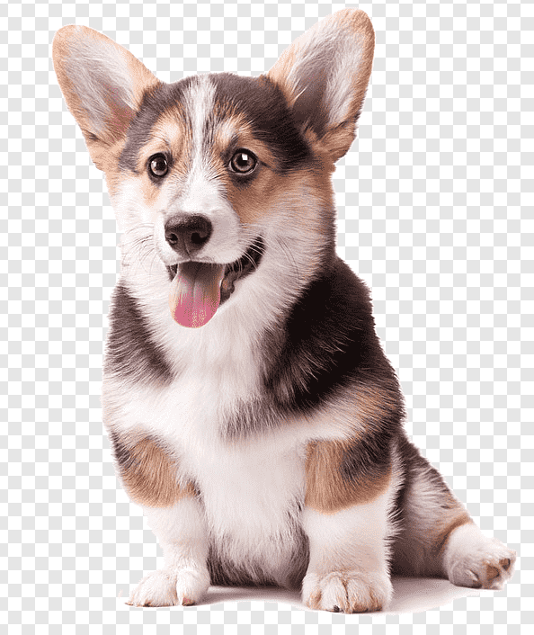
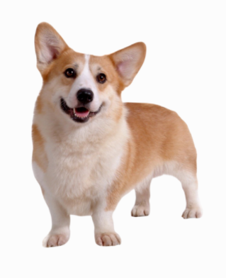

강아지 용품 준비하기
강아지 집
강아지가 편히 쉴 수 있는 포근한 집이 필요합니다. 강아지의 집은 강아지가 다 큰 후에도 계속 쓸 수 있는 집으로 구입하세요.집을 구입하실 때는 박음질이 잘 되어 있는지, 세탁이 간편한 제품인지 곡 확인하시고 고르시는 것이 좋습니다.
강아지 먹이
강아지의 먹이는 꼭 어린 강아지용으로 나와있는 사료를 선택하세요. 강이지들은 나와잇는 사료를 선택하세요. 강아지들은 사람에 비해 성장속도가 8배정도 빠르답니다. 따라서 강아지에게는 성장속도에 맞는 사료를 급여하셔야 합니다. 사람이 먹는 음식을 먹게 되면 양념과 향신료에 입맛이 익숙해지고, 비만이 될 가능성이 매우 높아집니다. 강아지용 사료는 생후 12개월까지 급여하셔야 합니다.



밥그릇, 물병
밥그릇은 쉽게 넘어지지 않도록 바닥이 넓은 것이 좋습니다. 물병은 대롱이 달린 것으로 선택하세요. 밥그릇에 물을 주게 되면 입 주변에 털이 모두 젖기 때문에 비위생적이므로 대롱을 통해서 물을 먹을 수 있는 물병을 마련하시는 것이 좋습니다.
이름표, 목줄
강아지를 잃어버릴 염려가 있으니 산책할 무렵이 되면 이름표를 꼭 목에 걸어주도록 하세요. 그리고 방울이 달린 목걸이를 하고자 하실 때는 신중하셔야 합니다. 움직일 때마다 방울이 딸랑 거리면 신경이 예민한 강아지들에게는 좋지 않은 영향을 끼칠 수 있기 때문입니다.